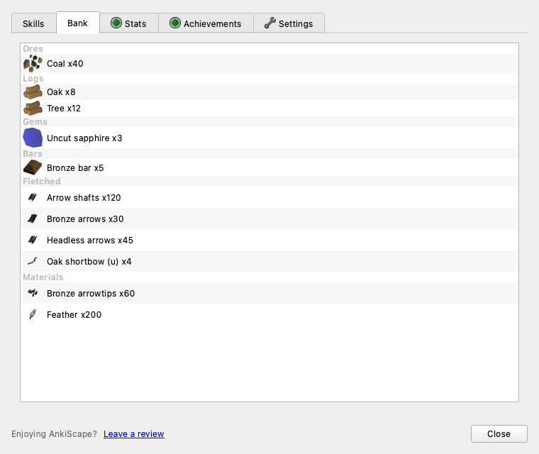
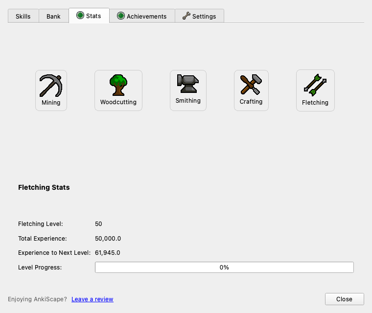

Stats, Bank, and the review HUD were still wired to the original four skills. They're now driven by the skill registry and item manifest, so Fletching — and any future registered skill — shows up automatically. No backend, asset, or gameplay changes; flat save keys untouched.
Selectors come from implemented_review_skill_names(); icons resolve via skill_icon_path_for(). Also fixed the detail switcher to hide+unparent before deleteLater so blocks stop ghost-overlapping.
Inventory is grouped by item-registry category via grouped_inventory() — Ores → Logs → Gems → Bars → Crafted → Fletched → Materials — with icons from each ItemDefinition.asset_path (legacy image-map fallback).
Active-skill recognition and icon lookup are registry-driven instead of a fixed four-skill tuple, so training Fletching shows "Fletching — Lv N" with its icon instead of the "no skill" placeholder. Level-up dialog too.


skills_info = [
("Mining", ...),
("Woodcutting", ...),
("Smithing", ...),
("Crafting", ...),
]
if skill not in (
"Mining","Woodcutting",
"Smithing","Crafting"): ...
skills_info = [
(n, skill_icon_path_for(n) or fallback)
for n in playable_review_skill_names()
]
if skill not in
playable_review_skill_names(): ...
New offscreen tests: Stats shows a Fletching panel; Bank renders Fletched/Materials headers with icons; HUD recognizes Fletching as active. Run: QT_QPA_PLATFORM=offscreen .venv-qt/bin/python -m unittest discover tests
Stats tab → click Fletching (level/XP/progress). Bank tab → fletched items and materials grouped with icons. Train Fletching → the review HUD shows the Fletching icon + level.